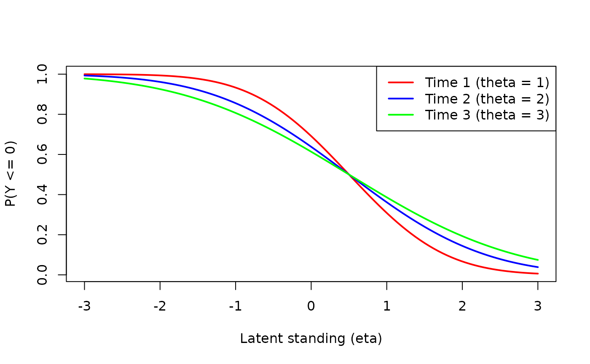

Longitudinal Invariance
Hok Chio (Mark) Lai
invariance.Rmd
library(longcfa)
library(lavaan)
#> This is lavaan 0.6-19
#> lavaan is FREE software! Please report any bugs.The discussion of invariance in this note applies to not just longitudinal confirmatory factor analysis (CFA), but also to cross-sectional CFA.
Continuous Indicators
General considerations
Latent variable scaling:
- One constraint per latent construct is needed to identify the
construct unit (i.e., latent variance). By default, we fix latent
variances to 1 for all time points when
"loadings"is not inlong_partial, and fix latent variance to 1 for the first time point when"loadings"is inlong_partial. - One constraint per latent construct is needed to identify the
construct zero point (i.e., latent mean). By default, we fix latent
means to 0 for all time points when
"intercepts"is not inlong_partial, and fix latent mean to 0 for the first time point when"intercepts"is inlong_partial.
Hierarchical principle:
- When the loading of an indicator for a particular time point is free (i.e., latent variable by time interaction is present), the corresponding intercept (i.e., the main/marginal effect) should be free as well.
- The unique variance (aka
"residuals") can be held equal across time points even when the loadings or the intercepts are not constrained equal.
Summary table
Stages of invariance for continuous indicators:
| Model | Equal parameters | Latent Variance | Latent Mean |
|---|---|---|---|
| Configural | None | 1 for all time points | 0 for all time points |
| Metric | Loadings | 1 for first time point | 0 for all time points |
| Scalar | Loadings, Intercepts | 1 for first time point | 0 for first time point |
| Strict | Loadings, Intercepts, Unique Variances and Covariances | 1 for first time point | 0 for first time point |
Requirement for estimating latent variances and means
Technically speaking, one can freely estimate the latent variances for each time point (except for the first, which is fixed to 1) when metric invariance holds or is assumed for at least one indicator. In practice, when less than half of the indicators are metric invariant, it is quite difficult to identify one indicator that truly satisfies metric invariant, so one should be cautious with such models. Similarly, one can freely estimate the latent means for each time point (except for the first, which is fixed to 0) when scalar invariance holds or is assumed for at least one indicator. Again, it is quite difficult to identify one indicator that truly satisfies scalar invariant when less than half of the indicators are scalar invariant.
Example
# Load the PoliticalDemocracy data
data("PoliticalDemocracy", package = "lavaan")
# Configural invariance
pd_ind <- matrix(
c("y1", "y2", "y3", "y4", "y5", "y6", "y7", "y8"),
nrow = 4
)
config <- longcfa(
pd_ind,
lv_names = c("dem60", "dem65"),
data = PoliticalDemocracy,
lag_cov = TRUE
)
metric <- longcfa(
pd_ind,
lv_names = c("dem60", "dem65"),
data = PoliticalDemocracy,
lag_cov = TRUE,
long_equal = "loadings"
)
scalar <- longcfa(
pd_ind,
lv_names = c("dem60", "dem65"),
data = PoliticalDemocracy,
lag_cov = TRUE,
long_equal = c("loadings", "intercepts")
)
strict <- longcfa(
pd_ind,
lv_names = c("dem60", "dem65"),
data = PoliticalDemocracy,
lag_cov = TRUE,
long_equal = c("loadings", "intercepts", "residuals")
)
anova(config, metric, scalar, strict)
#>
#> Chi-Squared Difference Test
#>
#> Df AIC BIC Chisq Chisq diff RMSEA Df diff Pr(>Chisq)
#> config 15 2707.0 2774.2 23.841
#> metric 18 2704.3 2764.5 27.135 3.2941 0.036152 3 0.3485
#> scalar 21 2704.3 2757.6 33.131 5.9961 0.115396 3 0.1118
#> strict 25 2703.9 2748.0 40.802 7.6711 0.110621 4 0.1044There isn’t strong evidence for violations of invariance. But just for illustration, let’s fit a partial scalar invariance model
# Check modification indices
modindices(scalar, sort = TRUE, free.remove = FALSE, min = 3.84)
#> Warning: lavaan->modindices():
#> the modindices() function ignores equality constraints; use lavTestScore()
#> to assess the impact of releasing one or multiple constraints.
#> lhs op rhs mi epc sepc.lv sepc.all sepc.nox
#> 72 y6 ~~ y8 6.151 1.277 1.277 0.404 0.404
#> 57 y2 ~~ y4 5.080 1.412 1.412 0.333 0.333
#> 6 y2 ~1 3.994 0.598 0.598 0.153 0.153
#> 51 y1 ~~ y3 3.886 0.854 0.854 0.251 0.251
# Free the intercept of y2 at time 1
pscalar <- longcfa(
pd_ind,
lv_names = c("dem60", "dem65"),
data = PoliticalDemocracy,
lag_cov = TRUE,
long_equal = c("loadings", "intercepts"),
long_partial = list(
intercepts = matrix(c(2, 1), nrow = 1)
)
)
anova(scalar, pscalar)
#>
#> Chi-Squared Difference Test
#>
#> Df AIC BIC Chisq Chisq diff RMSEA Df diff Pr(>Chisq)
#> pscalar 20 2700.3 2755.9 27.151
#> scalar 21 2704.3 2757.6 33.131 5.9804 0.25769 1 0.01447 *
#> ---
#> Signif. codes: 0 '***' 0.001 '**' 0.01 '*' 0.05 '.' 0.1 ' ' 1
summary(pscalar)
#> lavaan 0.6-19 ended normally after 46 iterations
#>
#> Estimator ML
#> Optimization method NLMINB
#> Number of model parameters 31
#> Number of equality constraints 7
#>
#> Number of observations 75
#>
#> Model Test User Model:
#>
#> Test statistic 27.151
#> Degrees of freedom 20
#> P-value (Chi-square) 0.131
#>
#> Parameter Estimates:
#>
#> Standard errors Standard
#> Information Expected
#> Information saturated (h1) model Structured
#>
#> Latent Variables:
#> Estimate Std.Err z-value P(>|z|)
#> dem60 =~
#> y1 (.l1) 2.098 0.237 8.868 0.000
#> y2 (.l2) 2.829 0.340 8.322 0.000
#> y3 (.l3) 2.569 0.306 8.408 0.000
#> y4 (.l4) 2.902 0.294 9.882 0.000
#> dem65 =~
#> y5 (.l1) 2.098 0.237 8.868 0.000
#> y6 (.l2) 2.829 0.340 8.322 0.000
#> y7 (.l3) 2.569 0.306 8.408 0.000
#> y8 (.l4) 2.902 0.294 9.882 0.000
#>
#> Covariances:
#> Estimate Std.Err z-value P(>|z|)
#> .y1 ~~
#> .y5 0.837 0.371 2.256 0.024
#> .y2 ~~
#> .y6 1.826 0.758 2.410 0.016
#> .y3 ~~
#> .y7 1.200 0.629 1.907 0.057
#> .y4 ~~
#> .y8 0.287 0.478 0.599 0.549
#> dem60 ~~
#> dem65 0.917 0.067 13.743 0.000
#>
#> Intercepts:
#> Estimate Std.Err z-value P(>|z|)
#> .y1 (.i1) 5.456 0.287 19.001 0.000
#> .y2 (.2_1) 4.256 0.442 9.627 0.000
#> .y3 (.i3) 6.569 0.365 18.005 0.000
#> .y4 (.i4) 4.461 0.372 11.998 0.000
#> .y5 (.i1) 5.456 0.287 19.001 0.000
#> .y6 (.i2) 3.392 0.432 7.851 0.000
#> .y7 (.i3) 6.569 0.365 18.005 0.000
#> .y8 (.i4) 4.461 0.372 11.998 0.000
#> dem60 0.000
#> dem65 -0.146 0.070 -2.095 0.036
#>
#> Variances:
#> Estimate Std.Err z-value P(>|z|)
#> .y1 (.1_1) 2.128 0.444 4.796 0.000
#> .y2 (.2_1) 6.661 1.239 5.375 0.000
#> .y3 (.3_1) 5.385 1.005 5.356 0.000
#> .y4 (.4_1) 2.601 0.664 3.918 0.000
#> .y5 (.1_2) 2.812 0.538 5.222 0.000
#> .y6 (.2_2) 4.001 0.805 4.970 0.000
#> .y7 (.3_2) 3.619 0.713 5.073 0.000
#> .y8 (.4_2) 2.457 0.616 3.989 0.000
#> dem60 1.000
#> dem65 0.949 0.126 7.541 0.000
# Estimates of latent means and variances
parameterEstimates(scalar) |>
subset(lhs %in% c("dem60", "dem65") & op %in% c("~1", "~~"))
#> lhs op rhs label est se z pvalue ci.lower ci.upper
#> 25 dem60 ~~ dem60 1.000 0.000 NA NA 1.000 1.000
#> 26 dem65 ~~ dem65 0.947 0.126 7.542 0.000 0.701 1.193
#> 27 dem60 ~1 0.000 0.000 NA NA 0.000 0.000
#> 28 dem65 ~1 -0.210 0.066 -3.166 0.002 -0.340 -0.080
#> 33 dem60 ~~ dem65 0.918 0.067 13.755 0.000 0.788 1.049
parameterEstimates(pscalar) |>
subset(lhs %in% c("dem60", "dem65") & op %in% c("~1", "~~"))
#> lhs op rhs label est se z pvalue ci.lower ci.upper
#> 25 dem60 ~~ dem60 1.000 0.000 NA NA 1.000 1.000
#> 26 dem65 ~~ dem65 0.949 0.126 7.541 0.000 0.703 1.196
#> 27 dem60 ~1 0.000 0.000 NA NA 0.000 0.000
#> 28 dem65 ~1 -0.146 0.070 -2.095 0.036 -0.283 -0.009
#> 33 dem60 ~~ dem65 0.917 0.067 13.743 0.000 0.786 1.048Note that even when there was not strong evidence for violations of invariance, the latent mean estimates are quite different across the scalar and partial scalar invariance models, which is partly due to the small sample size.
Categorical Indicators
The longcfa package supports the latent response variate
model for categorical indicators, which assumes an underlying normal
variate for each indicator. The factor model is then imposed on the
normal latent variates.
See Tse, Lai, and Zhang (2024) for more detailed discussion.
General considerations
Parameterization:
- Only
thetaparameterization is supported, which estimates the unique variance of the normal latent variates. Thedeltaparameterization is not recommended nor supported, as equality of the scale parameters (i.e., total variances of the normal latent variates) across time points does not imply factorial invariance.
Latent variable scaling:
In addition to the identification conditions for the latent factors, each item also has an underlying latent variate, which requires identification of its mean and variance. This makes things tricky when trying to apply the invariance steps for continuous indicators to categorical indicators, as discussed in Wu and Estabrook (2016) and Tse, Lai, and Zhang (2024).
A rather general solution is to follow the norm in
item response theory (IRT), which generally fix the unique variance of
the latent variates to 1 (for normal ogive models, meaning that the
latent variate has a normal distribution), and the intercept to 0. This
is achieved with the fix_theta = TRUE argument in
longcfa(), with is the default for categorical indicators.
With this, the unique variance is no longer a free parameter, and so one
only considers loadings and thresholds invariance. In IRT terminology,
loadings invariance implies no non-uniform differential item functioning
(DIF), and loadings and thresholds invariance implies no uniform and
non-uniform DIF, aka strict invariance.
More technical details:
For an indicator \(Y\) with \(C\) categories and \(C - 1\) thresholds, the latent response variate is \(Y^* = \nu + \lambda \eta + \epsilon\), where \(\nu\) is the intercept, \(\lambda\) is the loading, \(\eta\) is the latent factor, and \(\epsilon\) is the unique factor with mean 0 and variance \(\theta\), and assumed normally distributed. The thresholds are denoted as \(\tau^{c}\) for \(c = 1, \ldots, C - 1\).
The probability of observing \(Y\) to be \(c\) or lower, given the latent standing \(\eta_1\), is:
\[ \begin{aligned} P(Y \leq c | \eta_1) & = P(Y^* \leq \tau^{c}) \\ & = P(\nu + \lambda \eta_1 + \epsilon \leq \tau^{c}) \\ & = P(\epsilon \leq \tau^{c} - \nu - \lambda \eta_1) \\ & = P\left(\frac{\epsilon}{\sqrt{\theta}} \leq \frac{\tau^{c} - \nu - \lambda \eta_1}{\sqrt{\theta}}\right) \\ & = \Phi\left(\frac{\tau^{c} - \nu - \lambda \eta_1}{\sqrt{\theta}}\right), \end{aligned} \]
where \(\Phi(\cdot)\) denotes the cumulative standard normal density, as \(\epsilon / \sqrt{\theta}\) \(\sim\) \(N(0, 1)\). We can further show the quantity inside \(\Phi(\cdot)\) is a linear function of \(\eta\):
\[ P(Y \leq c | \eta_1) = \Phi\left(\underbrace{\frac{\tau^{c} - \nu}{\sqrt{\theta}}}_\text{intercept} - \underbrace{\frac{\lambda}{\sqrt{\theta}}}_\text{slope} \eta_1\right). \]
The above shows that the unique variance \(\theta\) affects both the intercept and the slope of inside the cumulative probability function. This implies that, even when the loadings, thresholds, and intercepts are equal across time points, no level of meaningful invariance is achieved when the unique variance is not equal.
The following graph shows the probability of observing \(Y\) to be 0 in a binary item as a function of \(\eta\), with equal \(\lambda\) = 1, \(\nu\) = 0$, \(\tau\) = 0.5 for three time points, but different unique variances \(\theta\) = 1, 2, and 3.
# Define function for probability of observing Y = 0
prob_y0 <- function(eta, lambda = 1, nu = 0, tau = 0.5, theta) {
pnorm((tau - nu - lambda * eta) / sqrt(theta))
}
curve(
prob_y0(x, theta = 1),
from = -3, to = 3, col = "red", lwd = 2,
xlab = "Latent standing (eta)", ylab = "P(Y <= 0)"
)
curve(
prob_y0(x, theta = 2),
from = -3, to = 3, col = "blue", lwd = 2, add = TRUE
)
curve(
prob_y0(x, theta = 3),
from = -3, to = 3, col = "green", lwd = 2, add = TRUE
)
legend(
"topright",
legend = c("Time 1 (theta = 1)", "Time 2 (theta = 2)", "Time 3 (theta = 3)"),
col = c("red", "blue", "green"), lwd = 2
)
Therefore, I recommend fixing the unique variance to 1 for all
categorical indicators, which is the default in
longcfa().
Summary table
| Model | Equal parameters | Latent Variance | Latent Mean |
|---|---|---|---|
| Configural | None | 1 for all time points | 0 for all time points |
| Metric | Loadings | 1 for first time point | 0 for all time points |
| Scalar | Loadings, Intercepts | 1 for first time point | 0 for first time point |
| Strict | Loadings, Intercepts, Unique Variances and Covariances | 1 for first time point | 0 for first time point |
Binary Item Example
# Dichotomized the PoliticalDemocracy data
pd_bin <- PoliticalDemocracy
# Dichotomize first two indicators
pd_bin[, 1:8] <- lapply(PoliticalDemocracy[, 1:8], function(x) {
cut(x, breaks = c(-Inf, 5.0, Inf), labels = FALSE)
})
# Configural (with fixed theta)
config_bin <- longcfa(
pd_ind,
lv_names = c("dem60", "dem65"),
data = pd_bin,
lag_cov = TRUE,
ordered = TRUE
)
# Loading invariance
metric_bin <- longcfa(
pd_ind,
lv_names = c("dem60", "dem65"),
data = pd_bin,
lag_cov = TRUE,
ordered = TRUE,
long_equal = "loadings"
)
# Threshold + loading invariance = strict invariance
strict_bin <- longcfa(
pd_ind,
lv_names = c("dem60", "dem65"),
data = pd_bin,
lag_cov = TRUE,
ordered = TRUE,
long_equal = c("loadings", "thresholds")
)
anova(config_bin, metric_bin, strict_bin)
#>
#> Scaled Chi-Squared Difference Test (method = "satorra.2000")
#>
#> lavaan->lavTestLRT():
#> lavaan NOTE: The "Chisq" column contains standard test statistics, not the
#> robust test that should be reported per model. A robust difference test is
#> a function of two standard (not robust) statistics.
#> Df AIC BIC Chisq Chisq diff Df diff Pr(>Chisq)
#> config_bin 15 5.8386
#> metric_bin 18 15.1420 6.9909 3 0.07219 .
#> strict_bin 21 16.1707 2.5137 3 0.47282
#> ---
#> Signif. codes: 0 '***' 0.001 '**' 0.01 '*' 0.05 '.' 0.1 ' ' 1There isn’t strong evidence for violations of invariance. But just for illustration, let’s fit a partial metric invariance model
# Check modification indices
modindices(metric_bin, sort = TRUE, free.remove = FALSE, min = 3.84)
#> Warning: lavaan->modindices():
#> the modindices() function ignores equality constraints; use lavTestScore()
#> to assess the impact of releasing one or multiple constraints.
#> Warning: lavaan->lav_start_check_cov():
#> starting values imply a correlation larger than 1; variables involved are:
#> y4 y8
#> lhs op rhs mi epc sepc.lv sepc.all sepc.nox
#> 60 dem65 =~ y3 8.128 1.162 1.308 0.808 0.808
#> 11 y3 ~~ y3 7.742 -2.099 -1.000 -0.382 -0.382
#> 23 y7 ~~ y7 7.742 2.099 1.000 0.328 0.328
#> 56 dem60 =~ y7 7.700 -1.369 -1.369 -0.784 -0.784
#> 58 dem65 =~ y1 6.778 -1.123 -1.265 -0.738 -0.738
#> 54 dem60 =~ y5 6.371 1.369 1.369 0.736 0.736
#> 9 y1 ~~ y1 6.340 1.896 1.000 0.340 0.340
#> 21 y5 ~~ y5 6.340 -1.896 -1.000 -0.289 -0.289
# Free the loading of y3 at time 2
pmetric_bin <- longcfa(
pd_ind,
lv_names = c("dem60", "dem65"),
data = pd_bin,
lag_cov = TRUE,
ordered = TRUE,
long_equal = "loadings",
long_partial = list(
loadings = matrix(c(3, 2), nrow = 1)
)
)
anova(metric_bin, pmetric_bin)
#>
#> Scaled Chi-Squared Difference Test (method = "satorra.2000")
#>
#> lavaan->lavTestLRT():
#> lavaan NOTE: The "Chisq" column contains standard test statistics, not the
#> robust test that should be reported per model. A robust difference test is
#> a function of two standard (not robust) statistics.
#> Df AIC BIC Chisq Chisq diff Df diff Pr(>Chisq)
#> pmetric_bin 17 7.3983
#> metric_bin 18 15.1420 4.8525 1 0.02761 *
#> ---
#> Signif. codes: 0 '***' 0.001 '**' 0.01 '*' 0.05 '.' 0.1 ' ' 1
summary(pmetric_bin)
#> lavaan 0.6-19 ended normally after 89 iterations
#>
#> Estimator DWLS
#> Optimization method NLMINB
#> Number of model parameters 22
#> Number of equality constraints 3
#>
#> Number of observations 75
#>
#> Model Test User Model:
#> Standard Scaled
#> Test Statistic 7.398 13.347
#> Degrees of freedom 17 17
#> P-value (Chi-square) 0.978 0.713
#> Scaling correction factor 0.901
#> Shift parameter 5.140
#> simple second-order correction
#>
#> Parameter Estimates:
#>
#> Parameterization Theta
#> Standard errors Robust.sem
#> Information Expected
#> Information saturated (h1) model Unstructured
#>
#> Latent Variables:
#> Estimate Std.Err z-value P(>|z|)
#> dem60 =~
#> y1 (.l1) 1.594 0.408 3.907 0.000
#> y2 (.l2) 2.197 0.795 2.763 0.006
#> y3 (.l3) 0.903 0.305 2.961 0.003
#> y4 (.l4) 4.874 4.027 1.210 0.226
#> dem65 =~
#> y5 (.l1) 1.594 0.408 3.907 0.000
#> y6 (.l2) 2.197 0.795 2.763 0.006
#> y7 (.3_2) 2.718 1.331 2.042 0.041
#> y8 (.l4) 4.874 4.027 1.210 0.226
#>
#> Covariances:
#> Estimate Std.Err z-value P(>|z|)
#> .y1 ~~
#> .y5 0.602 0.216 2.787 0.005
#> .y2 ~~
#> .y6 0.833 0.213 3.904 0.000
#> .y3 ~~
#> .y7 0.226 0.367 0.616 0.538
#> .y4 ~~
#> .y8 -0.670 2.362 -0.284 0.777
#> dem60 ~~
#> dem65 0.762 0.196 3.893 0.000
#>
#> Intercepts:
#> Estimate Std.Err z-value P(>|z|)
#> dem60 0.000
#> dem65 0.000
#>
#> Thresholds:
#> Estimate Std.Err z-value P(>|z|)
#> y1|t1 (.11_1) -0.094 0.274 -0.345 0.730
#> y2|t1 (.21_1) 0.865 0.423 2.043 0.041
#> y3|t1 (.31_1) -0.733 0.226 -3.244 0.001
#> y4|t1 (.41_1) 0.751 0.957 0.785 0.432
#> y5|t1 (.11_2) 0.299 0.243 1.232 0.218
#> y6|t1 (.21_2) 1.425 0.423 3.371 0.001
#> y7|t1 (.31_2) -1.117 0.472 -2.363 0.018
#> y8|t1 (.41_2) 1.583 1.336 1.184 0.236
#>
#> Variances:
#> Estimate Std.Err z-value P(>|z|)
#> .y1 1.000
#> .y2 1.000
#> .y3 1.000
#> .y4 1.000
#> .y5 1.000
#> .y6 1.000
#> .y7 1.000
#> .y8 1.000
#> dem60 1.000
#> dem65 0.636 0.325 1.956 0.050
#>
#> Scales y*:
#> Estimate Std.Err z-value P(>|z|)
#> y1 0.531
#> y2 0.414
#> y3 0.742
#> y4 0.201
#> y5 0.618
#> y6 0.496
#> y7 0.419
#> y8 0.249
# Estimates of latent variances
parameterEstimates(metric_bin) |>
subset(lhs %in% c("dem60", "dem65") & op %in% c("~~"))
#> lhs op rhs label est se z pvalue ci.lower ci.upper
#> 25 dem60 ~~ dem60 1.000 0.000 NA NA 1.000 1.000
#> 26 dem65 ~~ dem65 1.268 0.605 2.095 0.036 0.082 2.454
#> 33 dem60 ~~ dem65 1.099 0.260 4.223 0.000 0.589 1.609
parameterEstimates(pmetric_bin) |>
subset(lhs %in% c("dem60", "dem65") & op %in% c("~~"))
#> lhs op rhs label est se z pvalue ci.lower ci.upper
#> 25 dem60 ~~ dem60 1.000 0.000 NA NA 1.000 1.000
#> 26 dem65 ~~ dem65 0.636 0.325 1.956 0.05 -0.001 1.274
#> 33 dem60 ~~ dem65 0.762 0.196 3.893 0.00 0.378 1.146Note that even when there was not strong evidence for violations of metric invariance, the latent variance estimates are quite different across the metric and partial metric invariance models, which is partly due to the small sample size.
A Note on Intercept Invariance
In theory, instead of fixing the intercepts to 0, one can also fix
the thresholds to be equal, but allow the intercept to shift across time
points. This would imply that all thresholds shift by the same amount
for a particular time point. However, this is relatively uncommon in my
experience, so longcfa currently does not support this
option.